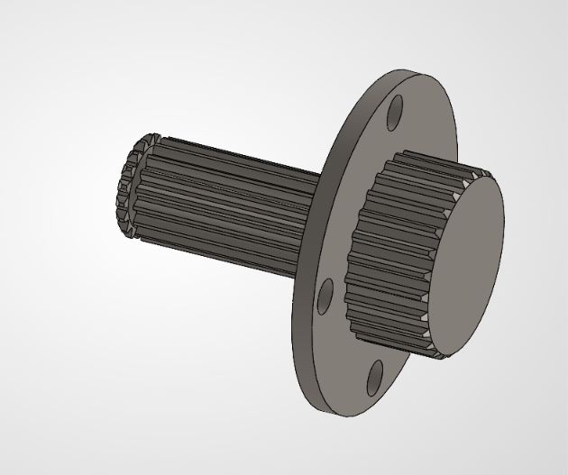
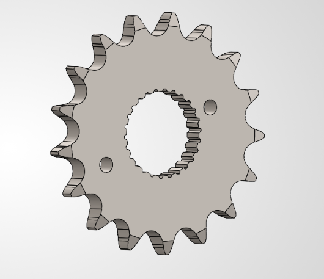
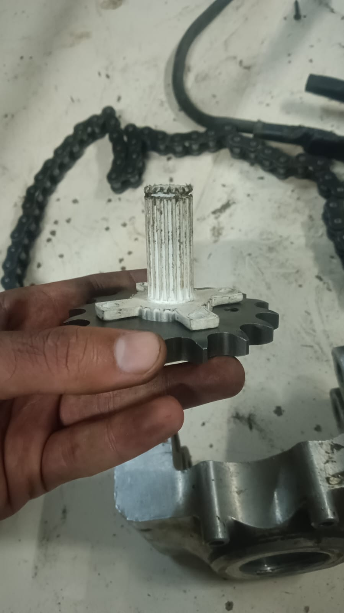
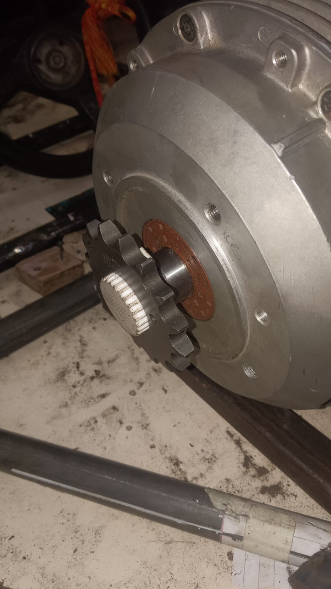
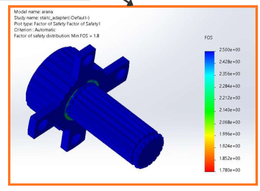

01. Problem statement
The motor uses an existing internal spline, but a suitable off-the-shelf male spline component that also provides a practical sprocket interface was difficult to source. The goal was to bridge the motor spline to a replaceable sprocket while preserving the motor and avoiding a bespoke adapter for every final-drive ratio.
Because the sprocket transmits chain force at an offset from the motor support, the design also needs attention to overhang, bending moment, alignment and retention—not only the mating spline geometry.
02. Design constraints
- The motor manufacturer would not modify the motor shaft or housing.
- No internal thread or retaining groove could be added to the motor output.
- Welding to the motor was avoided due to concerns about heat and possible effects on motor components.
- The adapter should engage the existing spline and avoid noticeable play at the initial fit check.
- The sprocket should be replaceable when the final-drive ratio changes.
- Keep the motor-side adapter common where possible, and use readily available sprockets rather than redesigning the whole interface for every ratio.
Supplied spline sourcing inputs
These are the reference dimensions supplied during the OEM-component search. They are not a claim that an exact purchasable match has been verified.
| Parameter | Reference value |
|---|---|
| Spline module | 1.0 |
| Tooth count | 18 |
| Pressure angle | 30° |
| Major diameter | 19.3 mm |
| Minor diameter | 16.2 mm |
| Standard / fit reference | GB/T 3478.1-1995 / 6h — verify against the motor drawing |
03. Design decisions
Would require a thread or modification that the motor manufacturer would not permit.
Not acceptable because the motor must remain unmodified; heat near the motor was also a concern.
A suitably matching standard component was difficult to find, making ratio changes and future availability important constraints.
Keep the motor-side spline adapter separate, and use a sprocket-side interface that can accept different tooth counts without needing a new motor spline adapter each time.
04. CAD development and design progression
The adapter concept shown at the top uses a spline body with four projecting mounting ears. The updated CAD view below presents the later circular-flange direction. Manufacturing review also highlighted that drilled holes and non-axisymmetric features require appropriate milling/drilling operations rather than simple lathe turning alone.

Design for manufacture
- A round flange profile is more compatible with turning operations than square outer blocks when the feature is intended to be turned.
- Mounting holes still require appropriate drilling or milling; they should not be described as lathe-only features.
- Add suitable fillets at geometry transitions to avoid unnecessarily sharp internal corners and to support manufacturability.
- Add chamfers to appropriate edges and spline lead-ins to ease assembly and remove sharp edges, while preserving critical fit dimensions.
05. Sprocket-side component and ratio flexibility
The sprocket is a separate driven component; the example below depicts a sprocket with an internally splined bore, not a flange intended to be attached to or machined into the motor. It illustrates the sprocket-side part considered during sourcing.

The project direction moved toward a keyed-bore sprocket interface because sprockets with a common bore/keyway can make it easier to source different tooth counts. The aim is to retain the same motor-side spline adapter and change the sprocket when the required ratio changes, subject to checking bore size, key dimensions, fit and availability.
06. Prototype fit check
A physical prototype was used to check engagement with the existing motor-side spline and the fit of the adapter/sprocket arrangement. You reported that it fitted without noticeable play during the initial fit check. This is a useful prototype observation, but it does not verify torque capacity, fatigue life or retention at maximum RPM.


07. Axial movement control
The prototype direction uses an O-ring as a simple feature intended to help control axial play, inspired by an axle-coupling arrangement. The spline and sprocket-side interface transmit torque; the O-ring should not be treated as the sole safety-critical high-speed retainer.
08. Chain load and bending-moment concern
Chain tension at the sprocket creates a transverse load. If the chain load plane is offset from the motor’s effective support, this produces a bending moment in addition to transmitted drive torque. The design objective is to avoid unnecessary overhang and unsupported length.
A full structural assessment should use the actual chain force, sprocket pitch radius, offset, spline engagement length, adapter material and support arrangement. The load and moment should be derived from the operating case rather than assumed from the geometry alone.
09. Preliminary ANSYS factor-of-safety result
The displayed legend spans approximately 1.78–2.50.

This is the only adapter simulation result currently available. The screenshot does not establish the full material card, applied torque and chain load, contact definitions, support conditions or mesh sensitivity. Do not assume it validates the updated CAD geometry unless that exact geometry and load case are re-solved.
10. Current outcome
The initial prototype fit check was completed and the adapter fitted without noticeable play at that stage. The updated CAD refines the geometry toward a rounded flange, with fillets and chamfers to be added or finalized for manufacturing. The sprocket remains a separate, replaceable component so ratio changes can be made without redesigning the motor-side spline interface.
The next design step is to finish the manufacturing details and verify the actual load path, chain-force bending, material properties and retention method. The current evidence supports the CAD progression and initial fit check; it does not yet establish a production-ready or high-speed-validated part.
11. Next validation steps
- Confirm the motor spline dimensions, fit and engagement length.
- Finalize fillets, chamfers and machinable details on the updated CAD.
- Confirm sprocket bore/key dimensions and availability across intended tooth counts.
- Measure assembled radial and axial runout.
- Calculate transmitted torque, chain tension and overhung bending loads.
- Re-run ANSYS on the updated geometry using documented material properties, loads, contacts and supports.
- Review mesh sensitivity and the stress around spline, flange and key interfaces.
- Assess positive retention, dynamic balance and safe operation before vehicle use.